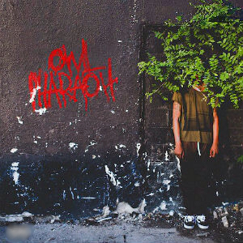

PROJECTS
| Owl Pharaoh  |
Owl Pharaoh is Travis Scott's 2013 debut mixtape and featured 14 tracks with some stand out songs including Upper Echelon, Hell of a Night, and Quintana. | Tracklist |
Days Before Rodeo |
Days Before Rodeo is Travis Scott's second mixtape released in 2014 and features 12 tracks. Some stand out songs include Mamacita, Quintana Part 2, and Skyfall. | Tracklist |
| Rodeo |
Rodeo is Travis Scott's 2015 debut studio album. It is widely considered as one of the best trap albums of all time due to it's unique and wide variety of sounds. It features 16 tracks with notable songs including Oh My Dis Side, 90210, and Antidote. | Tracklist |
Birds in The Trap Sing McKnight |
Birds in the Trap Sing McKnight is Traivs Scott's second studio album released in 2016. It features 14 tracks with stand out songs including Goosebumps, Pick Up the Phone, and Wonderful. | Tracklist |
| Huncho Jack, Jack Huncho |
Huncho Jack, Jack Huncho is Travis Scott's first collaborative album with rapper Quavo and was released in 2017. It features 13 tracks and notable songs include Huncho Jack, Go, and Where U From. | Tracklist |
Astroworld |
Astroworld is Travis Scott's third studio album released in 2018 and was arguably, one of his most anticipated albums ever. It certainly met expectations being nominated for album of the year. Astroworld features 17 tracks with notable ones including Stargazing, Sicko Mode, and Yosemite. | Tracklist |
Jackboys |
Jackboys is Travis Scott's fourth studio album released in late 2019 and is produced in collbaboration with his record label, Cactus Jack Records. The album features appearances from Don Toliver and Sheck Wes who is signed to the label. | Tracklist |